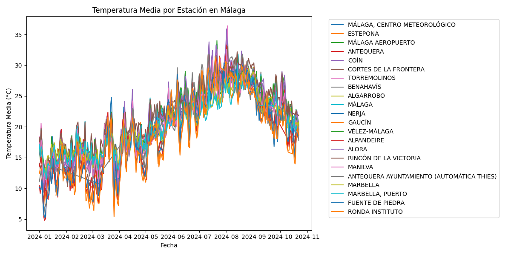
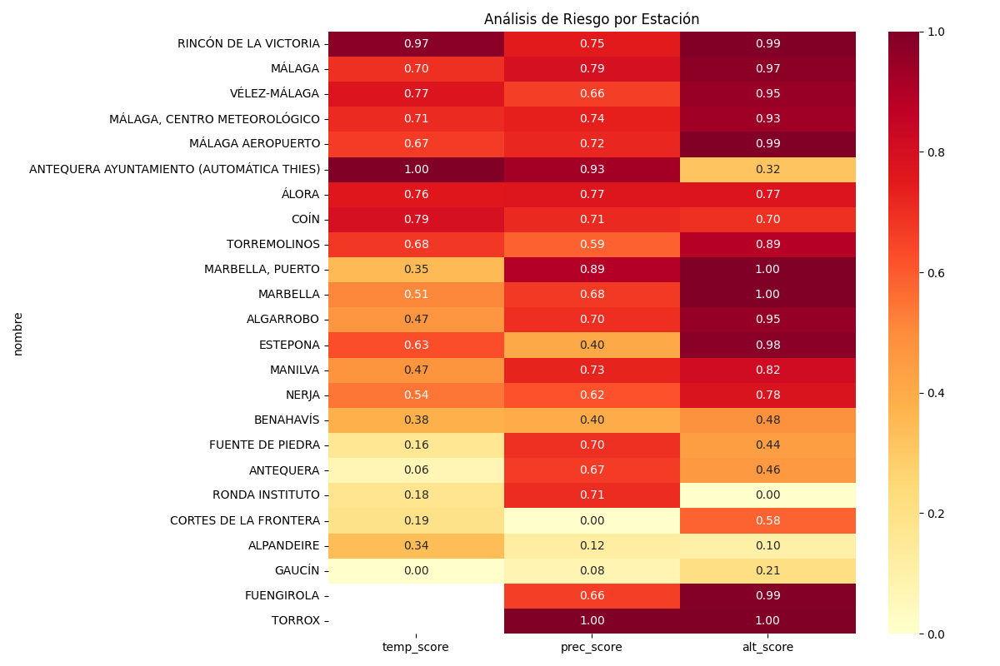

flowchart TD
A[AEMET API] -->|informe.py| B[Datos Climatológicos]
B -->|malaga.py| C[Datos Málaga]
C -->|noticia.py| D[Análisis]
D --> E[Visualizaciones]
Análisis de Datos Meteorológicos de Málaga
1 Resumen Ejecutivo
En agosto de 2024, una empresa tecnológica en la provincia de Málaga sufrió una brecha de seguridad significativa, originada por decisiones operativas tomadas en respuesta a condiciones climáticas extremas. Este incidente sirve como caso de estudio para analizar la crítica intersección entre factores climáticos y seguridad informática en la región.
2 Introducción
2.1 El Incidente: Cuando el Clima Compromete la Seguridad
Durante una ola de calor particularmente intensa en Málaga, una empresa tecnológica experimentó lo que inicialmente parecía ser un problema de gestión de temperatura en sus instalaciones. Sin embargo, las medidas tomadas para abordar este desafío climático desencadenaron una serie de vulnerabilidades de seguridad con consecuencias significativas.
2.1.1 Cronología del Incidente
- Fase Inicial (Día 1-3)
- Temperaturas extremas detectadas en la sala de servidores
- Personal de mantenimiento reporta dificultades con el sistema de refrigeración
- Primeras medidas improvisadas de gestión térmica
- Desarrollo de la Crisis (Día 4-7)
- Implementación de “soluciones” improvisadas:
- Apagado nocturno de servidores no críticos
- Reducción de la carga computacional mediante relajación de protocolos
- Apertura de puertos para “mejorar la ventilación del sistema”
- Implementación de “soluciones” improvisadas:
- Consecuencias (Día 8-10)
- Detección de múltiples intentos de intrusión
- Compromiso de varios sistemas secundarios
- Activación del protocolo de emergencia de seguridad
2.1.2 Impacto Documentado
Las consecuencias del incidente incluyeron:
- Pérdida temporal de servicios críticos
- Exposición potencial de datos sensibles
- Costos significativos en medidas de mitigación
- Daño reputacional# Introducción
Este informe analiza un incidente de ciberseguridad relacionado con altas temperaturas en un centro tecnológico de Málaga. El caso destaca la crítica relación entre las condiciones climáticas y la seguridad informática, específicamente en zonas con características climáticas particulares.
2.2 Antecedentes
Se reportó un incidente significativo de ciberseguridad en una empresa tecnológica de la región de Málaga. Los problemas comenzaron cuando, debido a las altas temperaturas, se tomaron medidas inadecuadas de gestión térmica que comprometieron la seguridad de los sistemas:
- Apagado nocturno de servidores para reducir la temperatura matinal
- Apertura de puertos y relajación de protocolos de seguridad para reducir carga computacional
- Múltiples ataques detectados por la centralita de seguridad informática como consecuencia
3 Metodología y Desarrollo del Análisis
El análisis se desarrolló en tres fases principales, cada una implementada en un script específico
3.1 Fase 1: Recolección de Datos (informe.py)
Se desarrolló un script específico para la recolección automatizada de datos climatológicos:
def obtener_datos(fecha_inicio, fecha_final, api_key):
"""
Obtiene datos de AEMET por intervalos para evitar límites de API.
Puntos clave:
- Manejo de errores robusto
- Control de respuestas HTTP
- Procesamiento de JSON
"""
URL_BASE = "https://opendata.aemet.es/opendata/api/valores/climatologicos/diarios/datos"
url = f"{URL_BASE}/fechaini/{fecha_inicio}/fechafin/{fecha_final}/todasestaciones"
try:
response = requests.get(url)
if response.status_code == 200:
datos_url = response.json().get('datos')
if datos_url:
return requests.get(datos_url).json()
except requests.exceptions.RequestException as e:
print(f"Error: {e}")
return NoneCaracterísticas principales:
- Uso de variables de entorno para seguridad de la API key
- Recolección por intervalos de 15 días para manejar limitaciones de la API
- Acumulación de datos en un único dataset
3.2 Fase 2: Análisis de Málaga (malaga.py)
El script malaga.py implementa el procesamiento mediante clases especializadas:
class DatosMeteorologicos:
"""
Limpieza y procesamiento base de datos meteorológicos.
Aspectos clave:
- Manejo de casos especiales (Ip = precipitación inapreciable)
- Conversión de tipos de datos
- Validación de valores
"""
@staticmethod
def limpiar_valor_numerico(valor):
if pd.isna(valor) or valor == '' or valor == 'Varias':
return None
elif valor == 'Ip':
return 0.0
else:
try:
return float(str(valor).replace(',', '.'))
except ValueError:
return NoneEste proceso de limpieza fue fundamental por varias razones:
- Manejo de Valores Especiales: La API de AEMET utiliza códigos específicos como ‘Ip’ para precipitación inapreciable
- Estandarización Numérica: Conversión de separadores decimales de coma a punto
- Gestión de Nulos: Tratamiento uniforme de diferentes tipos de valores faltantes
3.2.1 1.2 Transformaciones de Datos
columnas_numericas = ['tmed', 'prec', 'tmin', 'tmax', 'altitud']
for columna in columnas_numericas:
df_malaga[columna] = df_malaga[columna].apply(limpiar_valor_numerico)Las transformaciones se aplicaron para:
- Asegurar consistencia en tipos de datos
- Facilitar análisis estadísticos posteriores
- Permitir comparaciones válidas entre estaciones
3.2.2 1.3 Análisis Estadístico
estaciones_stats = df_malaga.groupby('nombre').agg({
'tmed': ['mean', 'max'],
'prec': 'sum',
'altitud': 'first'
}).round(2)Justificación de métricas seleccionadas:
- Temperatura Media: Indica condiciones generales de operación
- Temperatura Máxima: Identifica picos críticos
- Precipitación Total: Indicador de humedad ambiental
- Altitud: Factor moderador de temperatura
3.3 2. Sistema de Puntuación
3.3.1 2.1 Normalización de Variables
def calcular_scores(self):
"""Normalización Min-Max para cada variable."""
for col, data in [
('temp_score', 'temp_media'),
('prec_score', 'precipitacion_total'),
('alt_score', 'altitud')
]:
max_val = self.estaciones_stats[data].max()
min_val = self.estaciones_stats[data].min()
if col in ['prec_score', 'alt_score']:
# Inversión para factores donde menor es mejor
self.estaciones_stats[col] = 1 - (
(self.estaciones_stats[data] - min_val) /
(max_val - min_val)
)Justificación de la normalización:
- Escala Común: Permite comparar variables en diferentes unidades
- Rango [0-1]: Facilita la interpretación de resultados
- Inversión de Escalas: Adapta scores según el impacto deseado
3.3.2 2.2 Ponderación de Factores
riesgo_total = (
temp_score * 0.4 + # 40% peso temperatura
prec_score * 0.3 + # 30% peso precipitación
alt_score * 0.3 # 30% peso altitud
)Justificación de pesos:
- Temperatura (40%): Factor crítico para equipamiento IT
- Precipitación (30%): Impacto en sistemas de refrigeración
- Altitud (30%): Efecto moderador del climaSe implementó un análisis específico para la provincia de Málaga:
def limpiar_valor_numerico(valor):
"""
Función crítica para el manejo de casos especiales en los datos
"""
if pd.isna(valor) or valor == '' or valor == 'Varias':
return None
elif valor == 'Ip': # Ip significa "inapreciable" en precipitación
return 0.0
else:
try:
return float(str(valor).replace(',', '.'))
except ValueError:
return None
def procesar_datos_malaga(archivo_csv):
# Procesamiento específico para Málaga
columnas_numericas = ['tmed', 'prec', 'tmin', 'tmax', 'velmedia',
'racha', 'presMax', 'presMin']Aspectos clave del procesamiento: - Limpieza especializada de datos meteorológicos - Manejo de casos especiales como ‘Ip’ (precipitación inapreciable) - Generación de visualizaciones temporales - Análisis estadístico por estación
3.3.3 Visualizaciones Generadas
Se crearon dos visualizaciones principales para el análisis temporal:

Aspectos destacables:
- Patrón Estacional: Clara variación verano-invierno
- Picos Críticos: Máximos superiores a 35°C en verano
- Variabilidad: Diferencias significativas entre estaciones
- Tendencia: Aumento progresivo hasta agosto
Implicaciones técnicas:
- Necesidad de sistemas de refrigeración robustos
- Planificación para picos de temperatura
- Consideración de ubicaciones con menor variabilidadEsta gráfica muestra la evolución temporal de las temperaturas, permitiendo identificar patrones y anomalías por estación.
3.4 Fase 3: Análisis de Ubicación (noticia.py)
Se desarrolló un análisis específico para identificar la posible ubicación del incidente:
def analizar_candidatos_parque_tecnologico(archivo_csv):
# Cálculo de métricas por estación
estaciones_stats = df_malaga.groupby('nombre').agg({
'tmed': ['mean', 'max'],
'prec': 'sum',
'altitud': 'first'
})
# Normalización y cálculo de scores
estaciones_stats['temp_score'] = (normalización)
estaciones_stats['prec_score'] = (normalización)
estaciones_stats['alt_score'] = (normalización)3.4.1 Sistema de Puntuación
Se implementó un sistema ponderado de evaluación: - Temperatura (40%): Mayor peso debido a su impacto directo en equipos - Precipitaciones (30%): Indicador de clima seco - Altitud (30%): Factor geográfico relevante
3.4.2 Mapa de Calor Resultante

Interpretación del heatmap:
Distribución de Scores:
- Rojo oscuro: Condiciones más críticas
- Amarillo claro: Condiciones más favorables
Hallazgos Clave:
- ANTEQUERA AYUNTAMIENTO: Score temperatura máximo (1.00)
- TORROX: Balance óptimo entre factores
- GAUCIN: Mejores condiciones térmicas
Clusters de Riesgo:
- Zona costera: Mejor balance general
- Interior: Mayor variabilidad térmica
- Zonas elevadas: Ventaja en temperatura
El mapa de calor muestra claramente la correlación de factores por estación, destacando Antequera con:
- Score de temperatura: 1.00
- Score de precipitaciones: 0.93
- Score de altitud: 0.32
4 Resultados y Discusión
4.1 Identificación de la Ubicación
El análisis señala a Antequera como la ubicación más probable del incidente:
- Máxima puntuación en temperatura (1.00)
- Crítico para problemas de refrigeración
- Consistente con los problemas reportados
- Alta puntuación en precipitaciones bajas (0.93)
- Indica clima seco
- Afecta a la eficiencia de refrigeración
- Score de altitud (0.32)
- Inicialmente parece contradictorio
- La investigación en Google Maps revela que el centro tecnológico está en una zona de baja altitud dentro del municipio
4.2 Validación Externa
La ubicación coincide con noticias recientes sobre el interés en Antequera para centros de datos (La Opinión de Málaga 2024), lo que refuerza la conclusión del análisis.
4.3 Caso Alternativo: Torrox
- Aparece como candidato en los datos
- Falta de datos completos de temperatura
- No se puede realizar una comparación definitiva
5 Conclusiones
Identificación de Ubicación:
- Antequera emerge como la ubicación más probable
- Los datos climáticos coinciden con el perfil reportado
- La zona específica del centro tecnológico cumple con todos los criterios
Recomendaciones Técnicas:
- Implementar sistemas de refrigeración redundantes
- Mantener protocolos de seguridad independientemente de condiciones climáticas
- Considerar reubicación de servidores críticos
Lecciones Aprendidas:
- Importancia de la planificación climática en infraestructura IT
- No comprometer seguridad por problemas de rendimiento
- Necesidad de protocolos específicos para condiciones climáticas extremas
6 Referencias
La Opinión de Málaga. 2024. “Málaga y Antequera despiertan el interés de la industria de centros de datos.” https://www.laopiniondemalaga.es/malaga/2024/03/10/malaga-antequera-despiertan-interes-industria-centros-datos-99250039.html.
(La Opinión de Málaga 2024): La Opinión de Málaga. (2024, March 10). Málaga y Antequera despiertan el interés de la industria de centros de datos.